Исследования
Пентагон использует ИИ для написания обязательных докладов Конгрессу
Пентагон заменяет 200 часов работы пятичасовым ИИ-черновиком — и никто не знает, кто проверяет точность
Ars Technica
16 июн. 2026 г.Сохранённые материалы за этот день.
54 материалов
Пентагон заменяет 200 часов работы пятичасовым ИИ-черновиком — и никто не знает, кто проверяет точность
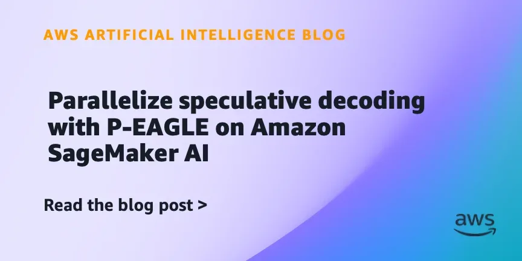
AWS ускорила LLM-инференс до 4x: P-EAGLE предсказывает токены параллельно и уже в SageMaker

Как Google научил ИИ видеть живые изгороди на фермах и зачем это нужно климату
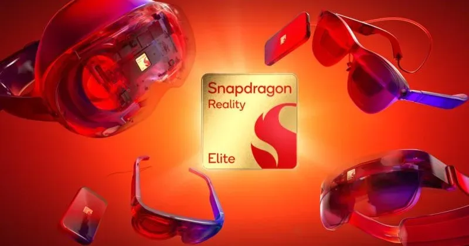
GPU на 60% быстрее, NPU до 160% — Qualcomm показала чип для следующего поколения умных очков.
Опрос WordPress VIP: большинство потребителей отвергают бренды, упоминающие ИИ, и требуют прозрачности.

SpaceX платит $60 млрд за ИИ-редактор кода Cursor — сделка закроется уже в третьем квартале

HPE и NVIDIA строят фабрики ИИ для агентной эры: новый CPU, защита данных и агентский тулкит

OpenAI потратила на R&D $19 млрд при выручке $13 млрд — утечка раскрыла реальные цифры
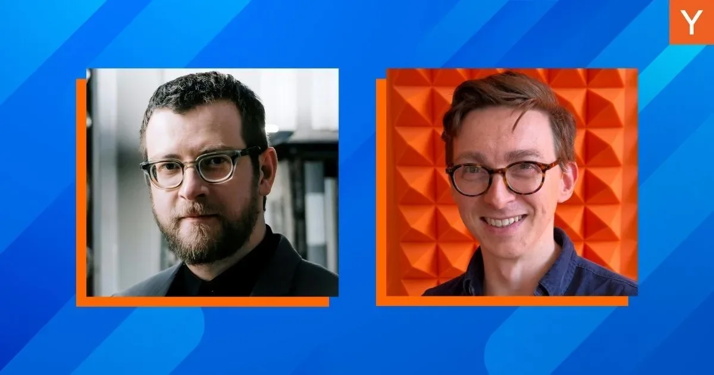
YC взял в генеральные партнёры двух основателей с экзитами в Twitter и GitHub

Крупнейшее IPO в истории: SpaceX привлекла $85,7 млрд и сделала Маска триллионером
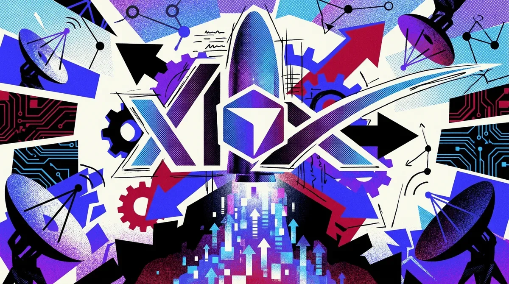
SpaceX заплатила $60 млрд за Cursor — и признала, что xAI отстаёт от OpenAI и Anthropic в ИИ-кодинге
Минюст встал на сторону xAI в споре о турбинах, сославшись на военное использование Grok.
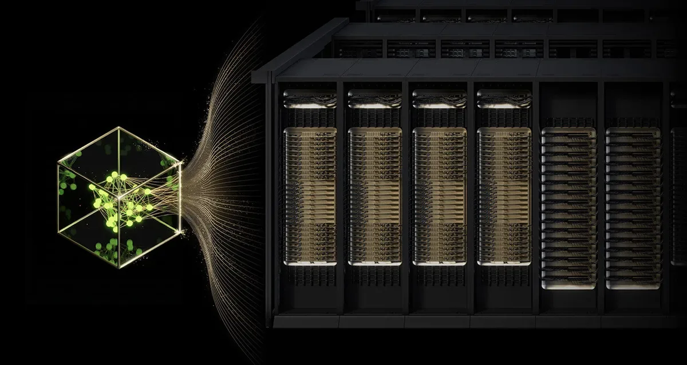
NVIDIA Blackwell выиграла все 7 категорий MLPerf — и единственная вообще участвовала в каждой
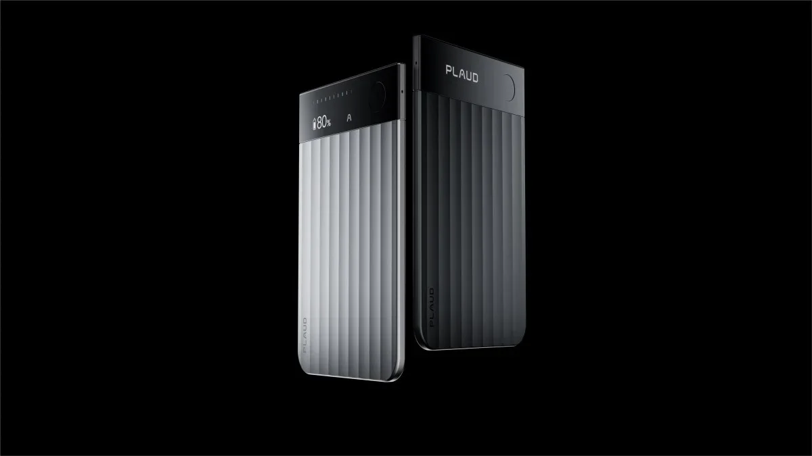
Plaud заработала $100 млн на ИИ-диктофонах без экрана — и половина пользователей платит
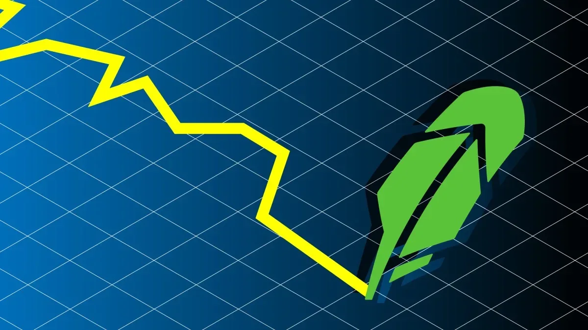
Robinhood уволил 290 человек и не сослался на ИИ — пока все остальные именно так и делают

Один промпт, одна ночь — и 95% браузерных тестов пройдено. Как это работает?
Томск — ИИ-столица России: почему не Москва и кто теснит ChatGPT
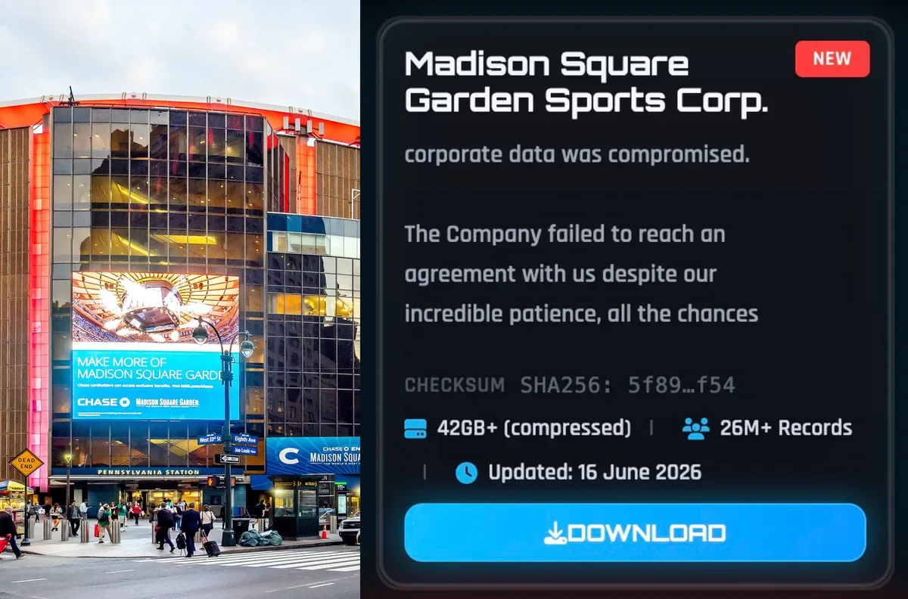
ShinyHunters слили данные Knicks и MSG — адреса, контакты и «стоимость таланта» теперь в открытом доступе

SpaceX дороже Amazon — и покупает ИИ-стартап Cursor за $60 млрд. Как это возможно?
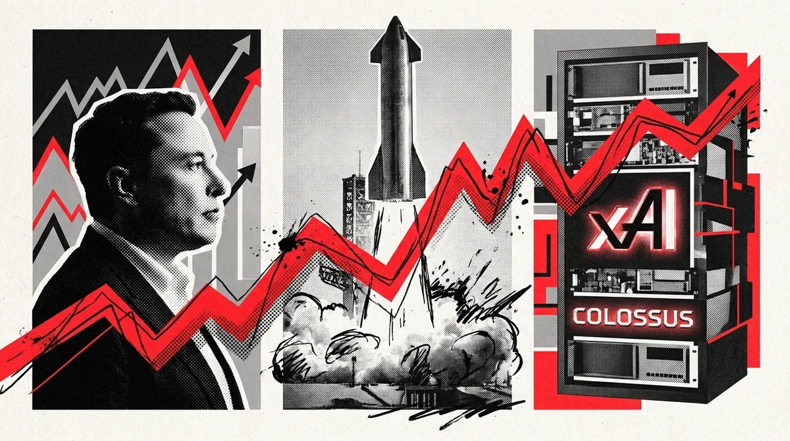
Grok — военная необходимость? Минюст США встал на защиту незаконных турбин xAI

Стартап Probably получил $9 млн на создание «экзоскелета» для LLM, который предотвращает галлюцинации и ошибки.
ВТБ объяснит инвестору каждую сделку ИИ: прогноз доходности и аналитика портфеля в одном приложении
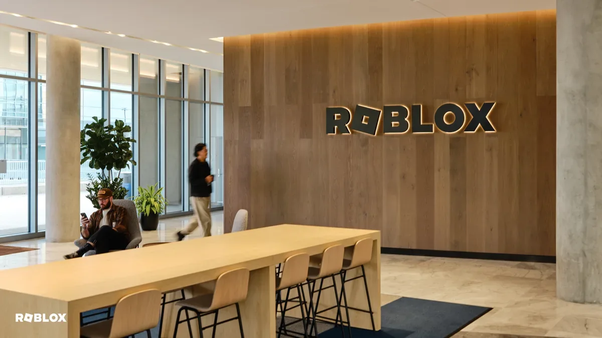
Хакеры крадут целые игры на Roblox, маскируясь под работодателей
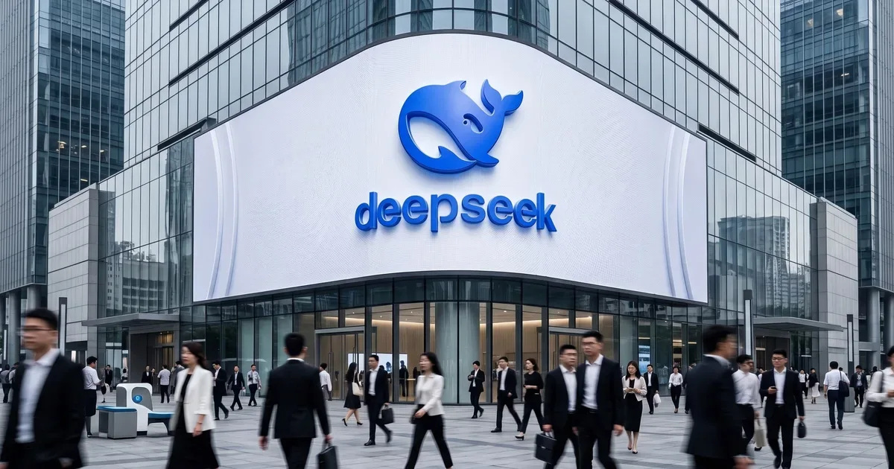
DeepSeek стал самым дорогим ИИ-стартапом Китая: $7,4 млрд раунд и оценка $50 млрд

Бэкдор в LiteLLM, скачанный 47 тысяч раз за три часа — симптом нерешаемой уязвимости ИИ-агентов.

Модель в 15 КБ бьёт float-аналог на MNIST и рассуждает без LLM — эксперимент из июня 2026

SpaceX, Anthropic и OpenAI идут на биржу. Кто сколько стоит и что их сдерживает
SpaceX потратит $60 млрд на ИИ-редактор кода Cursor — чтобы догнать OpenAI и Anthropic
Какие ИИ-модели повторяют российские нарративы, а какие их отвергают — первый систематический тест

SpaceX покупает Cursor за $60 млрд акциями — детали сделки с ИИ-стартапом